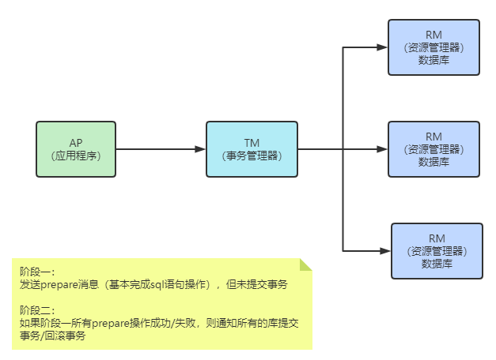
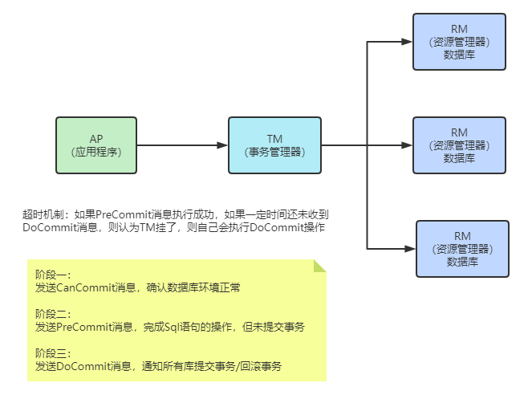

目录
CAP理论，BASE理论
负载均衡算法、类型
分布式架构下，Session共享有什么方案
简述你对RPC、RMI的理解
分布式id生成方案
分布式锁解决方案
分布式事务解决方案
如何实现接口的幂等性
CAP理论
Consistency(一致性)：
即更新操作成功并返回客户端后，所有节点在同一时间的数据完全一致。
对于客户端来说，一致性指的是并发访问时更新过的数据如何获取的问题。
从服务端来看，则是更新如何复制分布到整个系统，以保证数据最终一致。
Availability(可用性):
即服务一直可用，而且是正常响应时间。系统能够很好的为用户服务，不出现用户操作失败或者访问超 时等用户体验不好的情况。
Partition Tolerance(分区容错性):
即分布式系统在遇到某节点或网络分区故障的时候，仍然能够对外提供满足一致性和可用性的服务。分区容错性要求能够使应用虽然是一个分布式系统，而看上去却好像是在一个可以运转正常的整体。比如现在的分布式系统中有某一个或者几个机器宕掉了，其他剩下的机器还能够正常运转满足系统需求，对于用户而言并没有什么体验上的影响。
CP和AP：分区容错是必须保证的，当发生网络分区的时候，如果要继续服务，那么强一致性和可用性只能2选1
BASE理论
BASE是Basically Available（基本可用）、Soft state（软状态）和Eventually consistent（最终一致性）
BASE理论是对CAP中一致性和可用性权衡的结果，其来源于对大规模互联网系统分布式实践的总结，是基于CAP定理逐步演化而来的。BASE理论的核心思想是：即使无法做到强一致性，但每个应用都可以根据自身业务特点，采用适当的方式来使系统达到最终一致性。
基本可用：
- 响应时间上的损失：正常情况下，处理用户请求需要0.5s返回结果，但是由于系统出现故障，处理用户请求的时间变为3s。
- 系统功能上的损失：正常情况下，用户可以使用系统的全部功能，但是由于系统访问量突然剧增，系统的部分非核心功能无法使用。
软状态：数据同步允许一定的延迟
最终一致性：系统中所有的数据副本，在经过一段时间的同步后，最终能够达到一个一致的状态，不要求实时
负载均衡算法、类型
1、轮询法
将请求按顺序轮流地分配到后端服务器上，它均衡地对待后端的每一台服务器，而不关心服务器实际的连接数和当前的系统负载。
2、随机法
通过系统的随机算法，根据后端服务器的列表大小值来随机选取其中的一台服务器进行访问。由概率统计理论可以得知，随着客户端调用服务端的次数增多，其实际效果越来越接近于平均分配调用量到后端的每一台服务器，也就是轮询的结果。
3、源地址哈希法
源地址哈希的思想是根据获取客户端的IP地址，通过哈希函数计算得到的一个数值，用该数值对服务器列表的大小进行取模运算，得到的结果便是客服端要访问服务器的序号。采用源地址哈希法进行负载均衡，同一IP地址的客户端，当后端服务器列表不变时，它每次都会映射到同一台后端服务器进行访问。
4、加权轮询法
不同的后端服务器可能机器的配置和当前系统的负载并不相同，因此它们的抗压能力也不相同。给配置高、负载低的机器配置更高的权重，让其处理更多的请求；而配置低、负载高的机器，给其分配较低的权重，降低其系统负载，加权轮询能很好地处理这一问题，并将请求顺序且按照权重分配到后端。
5、加权随机法
与加权轮询法一样，加权随机法也根据后端机器的配置，系统的负载分配不同的权重。不同的是，它是按照权重随机请求后端服务器，而非顺序。
6、最小连接数法
最小连接数算法比较灵活和智能，由于后端服务器的配置不尽相同，对于请求的处理有快有慢，它是根据后端服务器当前的连接情况，动态地选取其中当前积压连接数最少的一台服务器来处理当前的请求，尽可能地提高后端服务的利用效率，将负责合理地分流到每一台服务器。
类型：
DNS方式实现负载均衡
硬件负载均衡：F5和A10
软件负载均衡：Nginx、HAproxy、LVS。其中的区别：
- Nginx：七层负载均衡，支持HTTP、E-mail协议，同时也支持4层负载均衡；
- HAproxy：支持七层规则的，性能也很不错。OpenStack默认使用的负载均衡软件就是HAproxy；
- LVS：运行在内核态，性能是软件负载均衡中最高的，严格来说工作在三层，所以更通用一些，适用各种应用服务。
分布式架构下，Session共享有什么方案
1、采用无状态服务，抛弃session
2、存入cookie（有安全风险）
3、服务器之间进行Session同步，这样可以保证每个服务器上都有全部的Session信息，不过当服务器数量比较多的时候，同步是会有延迟甚至同步失败；
4、IP绑定策略
使用Nginx（或其他复杂均衡软硬件）中的IP绑定策略，同一个IP只能在指定的同一个机器访问，但是这样做失去了负载均衡的意义，当挂掉一台服务器的时候，会影响一批用户的使用，风险很大；
5、使用Redis存储
把Session放到Redis中存储，虽然架构上变得复杂，并且需要多访问一次Redis，但是这种方案带来的好处也是很大的：
- 实现了Session共享；
- 可以水平扩展（增加Redis服务器）；
- 服务器重启Session不丢失（不过也要注意Session在Redis中的刷新/失效机制）；
- 不仅可以跨服务器Session共享，甚至可以跨平台（例如网页端和APP端）。
简述你对RPC、RMI的理解
RPC：在本地调用远程的函数，远程过程调用，可以跨语言实现httpClient
RMI：远程方法调用，java中用于实现RPC的一种机制，RPC的java版本，是J2EE的网络调用机制，跨JVM调用对象的方法，面向对象的思维方式
直接或间接实现接口java.rmi.Remote成为存在于服务器端的远程对象，供客户端访问并提供一定的服务
远程对象必须实现java.rmi.server.UniCastRemoteObject类，这样才能保证客户端访问获得远程对象时，该远程对象将会把自身的一个拷贝以Socket的形式传输给客户端，此时客户端所获得的这个拷贝称为“存根”，而服务器端本身已存在的远程对象则称之为“骨架”。其实此时的存根是客户端的一个代理，用于与服务器端的通信，而骨架也可认为是服务器端的一个代理，用于接收客户端的请求之后调用远程方法来响应客户端的请求。
分布式id生成方案
uuid
1，当前日期和时间时间戳2，时钟序列。计数器3，全局唯一的IEEE机器识别号，如果有网卡，从网卡MAC地址获得，没有网卡以其他方式获得。
优点：
代码简单，性能好（本地生成，没有网络消耗），保证唯一（相对而言，重复概率极低可以忽略）
缺点：
- 每次生成的ID都是无序的，而且不是全数字，且无法保证趋势递增。
- UUID生成的是字符串，字符串存储性能差，查询效率慢，写的时候由于不能产生顺序的append操作，需要进行insert操作，导致频繁的页分裂，这种操作在记录占用空间比较大的情况下，性能下降比较大，还会增加读取磁盘次数
- UUID长度过长，不适用于存储，耗费数据库性能。
- ID无一定业务含义，可读性差。
- 有信息安全问题，有可能泄露mac地址
数据库自增序列
单机模式：
优点：
- 实现简单，依靠数据库即可，成本小。
- ID数字化，单调自增，满足数据库存储和查询性能。
- 具有一定的业务可读性。（结合业务code）
缺点：
- 强依赖DB，存在单点问题，如果数据库宕机，则业务不可用。
- DB生成ID性能有限，单点数据库压力大，无法扛高并发场景。
- 信息安全问题，比如暴露订单量，url查询改一下id查到别人的订单
数据库高可用：多主模式做负载，基于序列的起始值和步长设置，不同的初始值，相同的步长，步长大于节点数
优点：
- 解决了ID生成的单点问题，同时平衡了负载。
缺点：
- 系统扩容困难：系统定义好步长之后，增加机器之后调整步长困难。
- 数据库压力大：每次获取一个ID都必须读写一次数据库。
- 主从同步的时候：电商下单->支付insertmasterdb select数据，因为数据同步延迟导致查不到这个数据。加cache(不是最好的解决方式)数据要求比较严谨的话查master主库。
Leaf-segment
采用每次获取一个ID区间段的方式来解决，区间段用完之后再去数据库获取新的号段，这样一来可以大大减轻数据库的压力
核心字段：biz_tag，max_id，step
biz_tag用来区分业务，max_id表示该biz_tag目前所被分配的ID号段的最大值，step表示每次分配的号段长度，原来每次获取ID都要访问数据库，现在只需要把Step设置的足够合理如1000，那么现在可以在1000个ID用完之后再去访问数据库
优点：
- 扩展灵活，性能强能够撑起大部分业务场景。
- ID号码是趋势递增的，满足数据库存储和查询性能要求。
- 可用性高，即使ID生成服务器不可用，也能够使得业务在短时间内可用，为排查问题争取时间。
缺点：
- 可能存在多个节点同时请求ID区间的情况，依赖DB
双buffer的方式，在当前号段消耗了10%的时候就去检查下一个号段有没有准备好，如果没有准备好就去更新下一个号段，但当前号段用完了就切换到下一个已经缓存好的号段去使用，同时在下一个号段消耗到10%的时候，又去检测下一个号段有没有准备好，如此往复。
优点：基于JVM存储双buffer的号段，减少了数据库查询，减少了网络依赖，效率更高。
缺点：segment号段长度是固定的，业务量大时可能会频繁更新号段，因为原本分配的号段会一下用完
如果号段长度设置的过长，但凡缓存中有号段没有消耗完，其他节点重新获取的号段与之前相比可能跨度会很大。动态调整Step
基于redis、mongodb、zk等中间件生成
雪花算法
生成一个64bit的整性数字
第一位符号位固定为0，41位时间戳，10位workId，12位序列号
位数可以有不同实现
优点：
- 每个毫秒值包含的ID值很多，不够可以变动位数来增加，性能佳（依赖workId的实现）。
- 时间戳值在高位，中间是固定的机器码，自增的序列在低位，整个ID是趋势递增的。
- 能够根据业务场景数据库节点布置灵活挑战bit位划分，灵活度高。
缺点：
- 强依赖于机器时钟，如果时钟回拨，会导致重复的ID生成，所以一般基于此的算法发现时钟回拨，都会抛异常处理，阻止ID生成，这可能导致服务不可用。
分布式锁解决方案
需要这个锁独立于每一个服务之外，而不是在服务里面。数据库：利用主键冲突控制一次只有一个线程能获取锁，非阻塞、不可重入、单点、失效时间
Zookeeper分布式锁：
zk通过临时节点，解决了死锁的问题，一旦客户端获取到锁之后突然挂掉（Session连接断开），那么这个临时节点就会自动删除掉，其他客户端自动获取锁。临时顺序节点解决惊群效应
Redis分布式锁：
setNX，单线程处理网络请求，不需要考虑并发安全性所有服务节点设置相同的key，返回为0、则锁获取失败
setnx问题：1、早期版本没有超时参数，需要单独设置，存在死锁问题（中途宕机）2、后期版本提供加锁与设置时间原子操作，但是存在任务超时，锁自动释放，导致并发问题，加锁与释放锁不是同一线程问题
删除锁：判断线程唯一标志，再删除
可重入性及锁续期没有实现，通过redisson解决（类似AQS的实现，看门狗监听机制）
redlock：意思的机制都只操作单节点、即使Redis通过sentinel保证高可用，如果这个master节点由于某些原因发生了主从切换，那么就会出现锁丢失的情况（redis同步设置可能数据丢失）。redlock从多个节点申请锁，当一半以上节点获取成功、锁才算获取成功，redission有相应的实现
分布式事务解决方案
- XA规范：分布式事务规范，定义了分布式事务模型
- 四个角色：事务管理器(协调者TM)、资源管理器(参与者RM)，应用程序AP，通信资源管理器CRM
- 全局事务：一个横跨多个数据库的事务，要么全部提交、要么全部回滚
- JTA事务时java对XA规范的实现，对应JDBC的单库事务
两阶段协议：

第一阶段（prepare）：每个参与者执行本地事务但不提交，进入ready状态，并通知协调者已经准备就绪。setnx问题：1、早期版本没有超时参数，需要单独设置，存在死锁问题（中途宕机）2、后期版本提供加锁与设置时间原子操作，但是存在任务超时，锁自动释放，导致并发问题，加锁与释放锁不是同一线程问题
第二阶段（commit）当协调者确认每个参与者都ready后，通知参与者进行commit操作；如果有参与者fail，则发送rollback命令，各参与者做回滚。
问题：
- 单点故障：一旦事务管理器出现故障，整个系统不可用（参与者都会阻塞住）
- 数据不一致：在阶段二，如果事务管理器只发送了部分commit消息，此时网络发生异常，那么只有部分参与者接收到commit消息，也就是说只有部分参与者提交了事务，使得系统数据不一致。
- 响应时间较长：参与者和协调者资源都被锁住，提交或者回滚之后才能释放
- 不确定性：当协事务管理器发送commit之后，并且此时只有一个参与者收到了commit，那么当该参与者与事务管理器同时宕机之后，重新选举的事务管理器无法确定该条消息是否提交成功。
三阶段协议：

主要是针对两阶段的优化，解决了2PC单点故障的问题，但是性能问题和不一致问题仍然没有根本解决
引入了超时机制解决参与者阻塞的问题，超时后本地提交，2pc只有协调者有超时机制
- 第一阶段：CanCommit阶段，协调者询问事务参与者，是否有能力完成此次事务。
- 如果都返回yes，则进入第二阶段
- 有一个返回no或等待响应超时，则中断事务，并向所有参与者发送abort请求
- 第二阶段：PreCommit阶段，此时协调者会向所有的参与者发送PreCommit请求，参与者收到后开始执行事务操作。参与者执行完事务操作后（此时属于未提交事务的状态），就会向协调者反馈“Ack”表示我已经准备好提交了，并等待协调者的下一步指令。
- 第三阶段：DoCommit阶段，在阶段二中如果所有的参与者节点都返回了Ack，那么协调者就会从“预提交状态”转变为“提交状态”。然后向所有的参与者节点发送”doCommit”请求，参与者节点在收到提交请求后就会各自执行事务提交操作，并向协调者节点反馈“Ack”消息，协调者收到所有参与者的Ack消息后完成事务。相反，如果有一个参与者节点未完成PreCommit的反馈或者反馈超时，那么协调者都会向所有的参与者节点发送abort请求，从而中断事务。
TCC（补偿事务）：Try、Confirm、Cancel
针对每个操作，都要注册一个与其对应的确认和补偿（撤销）操作
Try操作做业务检查及资源预留，Confirm做业务确认操作，Cancel实现一个与Try相反的操作既回滚操作。TM首先发起所有的分支事务的try操作，任何一个分支事务的try操作执行失败，TM将会发起所有分支事务的Cancel操作，若try操作全部成功，TM将会发起所有分支事务的Confirm操作，其中Confirm/Cancel操作若执行失败，TM会进行重试。
TCC模型对业务的侵入性较强，改造的难度较大，每个操作都需要有try、confirm、cancel三个接口实现
confirm和cancel接口还必须实现幂等性。
消息队列的事务消息：
发送prepare消息到消息中间件
发送成功后，执行本地事务
如果事务执行成功，则commit，消息中间件将消息下发至消费端（commit前，消息不会被消费）
如果事务执行失败，则回滚，消息中间件将这条prepare消息删除
消费端接收到消息进行消费，如果消费失败，则不断重试
如何实现接口的幂等性
- 唯一id。每次操作，都根据操作和内容生成唯一的id，在执行之前先判断id是否存在，如果不存在则执行后续操作，并且保存到数据库或者redis等。
- 服务端提供发送token的接口，业务调用接口前先获取token,然后调用业务接口请求时，把token携带过去，服务器判断token是否存在redis中，存在表示第一次请求，可以继续执行业务，执行业务完成后，最后需要把redis中的token删除
- 建去重表。将业务中有唯一标识的字段保存到去重表，如果表中存在，则表示已经处理过了
- 版本控制。增加版本号，当版本号符合时，才能更新数据
- 状态控制。例如订单有状态已支付未支付支付中支付失败，当处于未支付的时候才允许修改为支付中等

...
...
Copyright 2021 sunfy.top ALL Rights Reserved